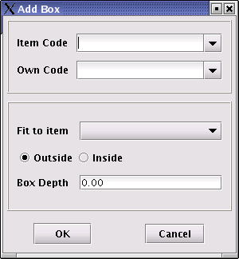

Creating a Box Frame
A box frame is usually created only after all the board and frame material items have been added to the design.
Add a box by clicking on the Add Box () button. The following window will be displayed.

All the different types of back material items will be listed in the Item Code and Own Code dropdown boxes. A user can select an item in either of the dropdown boxes. If an item is selected from the Item Code dropdown box, the corresponding Own Code of that item will be displayed and vica versa.
Create a box by selecting the appropriate material item from either of the dropdown boxes. The user must then specify the material item to which the box must fit and wether it should fit to the inside or outside of that item. Finally, enter the depth measurement of the box and click on the OK button.